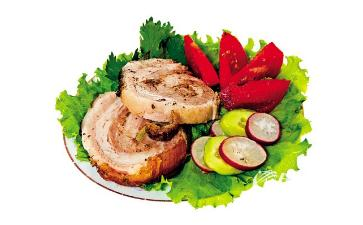

美国德克萨斯州的大厨TimLove走访了CNN的5对5热坐，并且解释了为何吃肉为“酷”，而吃素不“酷”。
这次走访辩论，在网上引发了1,500个帖子。到目前为止，实际上已超过2330个评论。CNN于是决定把双方的论点都发布出来，让读者们饱览。
JaneVelez-Mitchell是CNN的专业主持人，她是一位直言无率的纯
1. 肉食大厨言：“肉比蔬菜好吃，就这么简单。有几位非常棒的素食厨师，譬如：JeremyFox和JoséAndrés。他们做蔬菜的功夫绝佳，弄得我都在某一瞬间差点吃素。然后我喝了一口龙舌兰酒，就醒过神来了。我的意思是说-说真的，一块德州式的肋眼牛排和一块
纯素主持人言：“我宁愿大嚼一块时鲜的南瓜，而不是一块腐烂的动物尸体。这样吃起来就没有任何
我们被洗脑，结果就是渴爱一种杀害我们的饮食。我们相信好吃的东西一般是由社会设定的。有些团体把虫子当做美餐，因为他们就是那样长大的。孩子小的时候，往往不喜欢吃肉，但是在他们那些被误导的好心父母的坚持下，他们就开始吃了。最终，他们就爱上了这种口味，把肉奶当做他们的“正常“饮食。
事实是：美国人对肉奶的执着已经几乎毁坏了我们的味觉。普通的汉堡和奶昔中脂肪、盐、糖的含量是如此之高，几乎毁坏了我们对任何别的食物的味觉。当你放弃这些让人上瘾的东西时，你的味蕾就有机会恢复到它们的自然状态，你就会开始享受蔬菜和水果中的微妙滋味。蔬菜和水果所含的卡路里很低，又不含任何的胆固醇。
2. 肉食大厨言：当你走进一家牛排馆时，从没听到任何人说：“哇，那个奶油
纯素主持人言：当我闻到培根时，我会伤感。工厂式农场让几十亿养殖，最后被宰杀的猪的
这些有情众生被挤压在黑暗的养殖场，它们终其悲惨的一生也见不到天空，或呼吸一口新鲜的空气。美国人是正派人，那些唯一还在吃培根的人，是因为猪肉行业掩盖真相而被蒙蔽的人。我蔑视那些见过这些猪栏但是还想吃培根的人。
3. 肉食大厨言：想象一下假如一个餐馆中坐满了那些说教的素食者。我当然是在说笑。我有一些最好的朋友是吃素的。但是连他们也有那些认为自己比人更高尚的倾向。假如我想吃肉，就让我和平的吃吗。没人逼你们吃素，那你们干嘛逼我们呢？
纯素主持人言：我要挑战任何人可以和平的吃肉这一
我们如此聪明，但却想不到在那些极度窄小的鸡笼中饲养的鸡，它们的硺都必须剪掉才可避免将彼此硺死。这样的鸡跟那些有自由空间伸展翅膀的鸡相比，自然更容易得病。为何我们国家绝大多数的抗菌素都用于农场动物？因为它们受到的待遇让它们更容易得病！假如您一辈子都被困在飞机的中间座位上，您不觉得会更可能传染到同行乘客的感冒？
讲到让我们素食者个人自扫门前雪，其实，饮食涉及到大家的利益。因为肉食生产是制造全球暖化的最大成因-甚至超过交通。雨林被砍，是为了开辟牧场。动物产生的甲烷升到天空。不用信我的话，不过联合国做了一个很长的研究和总结报告。这份报告在网上很容易就可以找到。
还有，工厂式农场径流，是的，我指的是动物粪便，正在制造径流污染危机，威胁我们的河流和海洋。
最后，还有世界饥荒的问题。世界饥荒是地球上最大的
一头产奶的母牛每年消耗六吨干草，100多蒲式耳的
假如我们不是把这些食物用来饲养动物，而是把它们直接给人吃，那么，这个世界上就不会再有人挨饿。
4. 肉食大厨言：吃素看上去是一种更健康的选择（通常也确实）。但实际上，假如吃的适量，肉食提供了人体很需要的蛋白质，铁质，和氨基酸。只要不过量到像电视上那些吃十五磅汉堡的人那样，应该不会有问题。
纯素主持人言：假如吃大量的蛋白质是健康的关键，那美国就是世界上最健康的国家了。但我们不是。三分之二的美国人超重或肥胖，而且这一趋势有增无减。蛋白质只是一个推销的工具，我们大家都信了蛋白质的重要性。美国人的蛋白质摄入量太多了。
从很多来源可以得到植物蛋白，铁，和其它各种重要的维他命。我吃纯素已经18年。从来还没人说过我精力不够充沛。事实上，当我吃纯素以后，我的精力大增。更多的职业运动员转为纯素后，成绩得到改善。就从常识来看看马吧。马吃草，但是肌肉发达，又能跑得飞快。我们喜欢说：在动物旁边吃。
5. 肉食大厨言：假如你在
纯素主持人言：其实，对于很多觉得过节日和周末就像梦游的人来说，吃纯素就像是按了一个更新钮。突然间，那些旧传统中被注入了新的，有爱心的东西。在